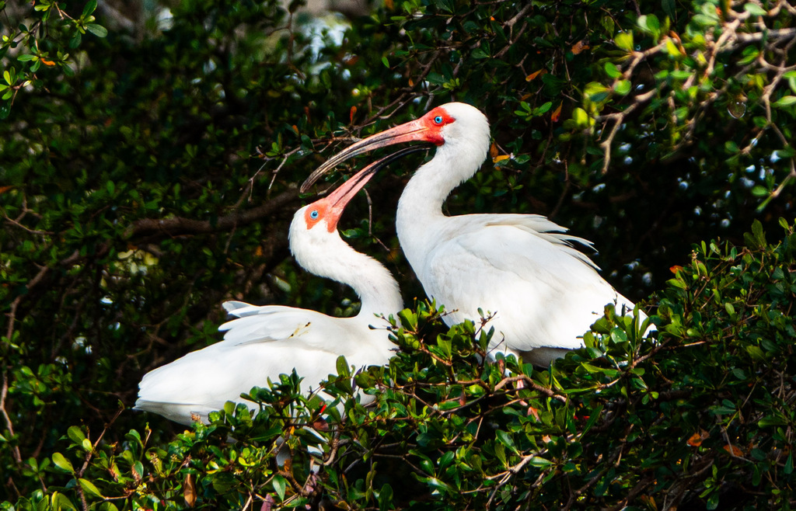

- If you spot a flock of bright white birds probing a wet lawn with long, curved red bills, those are white ibises.
- They do not start out white. Juveniles are a mottled, unassuming brown, and only grow into their clean white plumage — with black wingtips — as they mature.
- The long curved bill is a sensitive probe, so the ibis does not need clear water to feed; it sweeps through mud and shallows by feel, snapping up hidden crayfish, crabs, and insects.
- Local folklore holds that the ibis is the last bird to take shelter before a storm and the first to venture back out afterward — which is why it is sometimes seen as a quiet symbol of resilience.
All white with black wingtips (usually visible only in flight) and a long, down-curved bill, with red bill, face, and legs.
Mostly brown above with a white belly, gradually molting to white over their first couple of years.
Head down, bill probing the mud and shallows.
Generally quiet. Gives soft grunts and honking calls, and is more vocal at nesting and roosting colonies.
A medium-sized white bird with a long, downward-curving red-pink bill, walking through wet grass or shallows with its head down. Black wingtips flash when it flies. A brown-and-white bird with the same curved bill is a young ibis, not a different species.
Crayfish and crabs are favorites, along with insects, small fish, snails, and other small aquatic animals found by probing mud and shallow water.
On the lawns and grassy edges near the ponds, especially after rain, often in small flocks probing the wet ground with their curved bills.
Year-round resident. Frequently seen in flocks, and often most active feeding on damp ground in the morning.
Please do not feed them. Ibises do best foraging naturally, and handouts (especially bread) are not good for them. Watch and enjoy from a comfortable distance.


- © Rob Carr (CC-BY-NC), via iNaturalist
- © Mac Lewis (CC-BY-NC), via iNaturalist
- © Maria Escobar (CC-BY-NC), via iNaturalist
- © Denise Sosa (CC-BY-NC), via iNaturalist